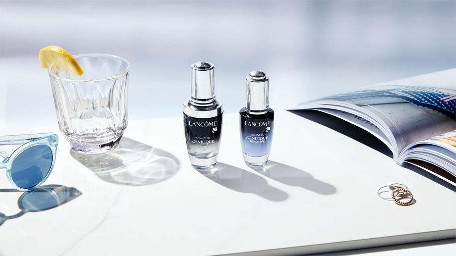

<main class="blog-inide container">
  <article class="blog-inside-article">
    <div class="slider">
      <h1 class="blog-inside-article__title">
        Подарок на Новый год от Lancôme: стильно, изыскано, со вкусом
      </h1>
      <p class="blog-inside-article__date">05 МАРТА 2019</p>
      
      <h2 class="blog-inside-article__subtitle">
        Подарок на Новый год от Lancôme: стильно, изыскано, со вкусом
      </h2>
      <p class="blog-inside-article__descr">
        Каким должен быть подарок на Новый год? Оригинальным, запоминающимся,
        желанным и, конечно, немного сказочным! Ведь каждый глубоко в душе
        мечтает о том, что случится чудо и Дед Мороз исполнит его самое заветное
        желание.
      </p>
      <p class="blog-inside-article__descr">
        Чтобы сделать идеальный подарок любимым на Новый год 2019, не нужно
        долго ломать голову. Достаточно выбрать что-то из продукции Lancôme!
        Такой бьюти-презент никогда не разочарует и гарантировано поднимет
        настроение. Качество подтверждено многолетней историей бренда.
      </p>
      <p class="blog-inside-article__descr">
        Парфюм: подарок с особым смыслом Когда вы дарите человеку парфюм,
        значит, вы очень близки. Такой личный подарок можно преподнести своей
        второй половинке, маме, близкой подруге. Для того чтобы правильно
        выбрать аромат, нужно очень хорошо знать человека, понимать его
        предпочтения, особенности, учитывать множество нюансов. Знать, какой
        парфюм он использует, а о каком мечтает.
      </p>
      <p class="blog-inside-article__descr">
        Lancôme предлагает широкий выбор ароматов для женщин. Даже если девушка
        до сих пор не пользовалась парфюмами этого бренда, она гарантировано
        оценит роскошную парфюмированную воду La Vie Est Belle de Parfum.
        Глубокий аромат гурманского ириса и критского ладана проникает в самое
        сердце, моментально влюбляет в себя и делает обладательницу невероятно
        женственной. В этом парфюме создателям удалось передать аромат самого
        счастья!
      </p>
      <p class="blog-inside-article__descr">
        Чувственным, ярким девушкам обязательно понравится новый аромат La Nuit
        Tresor с нотами розы, ванили и орхидеи. Эта парфюмированная вода
        совершенна: флакон выглядит как изысканная драгоценность, а потрясающая
        ароматическая композиция манит, как неразгаданная тайна. Парфюм очень
        легкий, он окутывает как невесомая дымка и его просто невозможно забыть.
      </p>
      <h2 class="blog-inside-article__subtitle">
        Прекрасным подарком для мамы станет туалетная вода Climat.
      </h2>
      <p class="blog-inside-article__descr">
        Аромат, идеально сбалансированный цветочным букетом, называют
        французской легендой. Он считается эталоном элегантности и безупречного
        вкуса, подчеркнет женственность и чувственность его обладательницы.
      </p>
      <p class="blog-inside-article__descr">
        Мужской парфюм Hypnôse Homme станет замечательным подарком на Новый год
        для любимого! Его притягательный, чувственный аромат никого не оставит
        равнодушным. Он идеально подойдет мужчине, который знает себе цену,
        чувствует себя уверенно в любых ситуациях. Эта туалетная вода с нотами
        мяты и бергамота точно займет достойное место в парфюмерное коллекции.
      </p>
      <p class="blog-inside-article__descr">
        Если вам сложно выбрать подходящий парфюм, и вы боитесь ошибиться с
        подарком на Новый год, остановите свой выбор на ароматической свече. Это
        прекрасный вариант как для любимой девушки, подруги или близкой
        родственницы, так и для коллеги или начальницы. Подобный подарок
        поднимет
      </p>
      <button class="slider__button slider__button__prev"></button
      ><button class="slider__button slider__button__next"></button>
    </div>
  </article>
</main>
